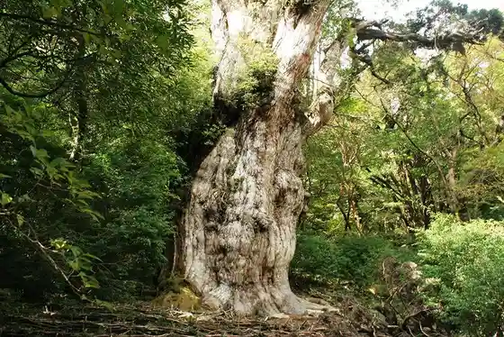
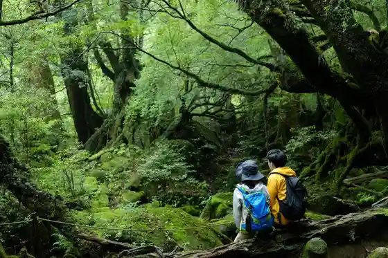
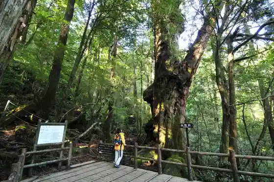
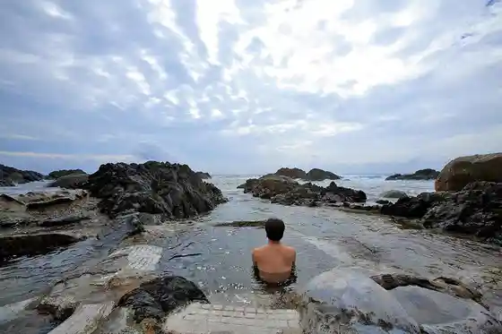

Jomon Sugi
Yakushima, Kagoshima · 0997-43-5900 · Official / source link

Shiratani Unsui Kyo (Taiko Iwa)
Yakushima, Kagoshima · 0997-42-3508 · Official / source link

Yakusugi Land
Yakushima, Kagoshima · 0997-42-3508 · Official / source link

Hiranai Kaichu Onsen
Yakushima, Kagoshima · 0997-47-2953 · Official / source link

Okawa Falls
Yakushima, Kagoshima · 0997-43-5900 · Official / source link
Miyanora Gaku
Yakushima, Kagoshima · 0997-43-5900 · Official / source link
Kigen Sugi
Yakushima, Kagoshima · 0997-43-5900 · Official / source link
Senjin Falls
Yakushima, Kagoshima · 0997-43-5900 · Official / source link
Yakushima Furutsu Garden (Papaiya Village)
Yakushima, Kagoshima · 0997-48-2468 · Official / source link
Seibu Rindo
Yakushima, Kagoshima · 0997-43-5900 · Official / source link
Nagata Inaka Hama
Yakushima, Kagoshima · 0997-43-5900 · Official / source link
Shitogo Gajumaru Park
Yakushima, Kagoshima · 0997-43-5900 · Official / source link
Masu Kyu Shrine
Yakushima, Kagoshima · 0997-42-0907 · Official / source link
Uiruson Kabu
Yakushima, Kagoshima · 0997-43-5900 · Official / source link
Yu Haku Onsen
Yakushima, Kagoshima · 0997-48-2806 · Official / source link
Torokko Michi
Yakushima, Kagoshima · 0997-43-5900 · Official / source link
Yaku Sugi Shizen Kan
Yakushima, Kagoshima · 0997-46-3113 · Official / source link
Kuchinoerabu Shima Nishi Yuki Yu Onsen
Yakushima, Kagoshima · 0997-43-5900 · Official / source link
Shiratani Unsui Kyo Torekkingu / Yakushima
Yakushima, Kagoshima · 0997-42-3508 · Official / source link
Toroki Falls
Yakushima, Kagoshima · 0997-43-5900 · Official / source link
Yodogawa
Yakushima, Kagoshima · 0997-43-5900 · Official / source link
Sarukawa Gajumaru
Yakushima, Kagoshima · Official / source link
Ichi Minato Beach
Yakushima, Kagoshima · 0997-43-5900 · Official / source link
Yokogawa Gorge
Yakushima, Kagoshima · 0997-43-5900 · Official / source link
YAKUSHIMA BLESS
Yakushima, Kagoshima · 0997-46-2899 · Official / source link
Kuchinoerabu Shima Hon Village Onsen
Yakushima, Kagoshima · Official / source link
Matsu Mine Bridge
Yakushima, Kagoshima · 0997-43-5900 · Official / source link
Chukan Gajumaru
Yakushima, Kagoshima · 0997-43-5900 · Official / source link
Takeda Kan
Yakushima, Kagoshima · 0997-46-2258 · Official / source link
Motchomu Gaku
Yakushima, Kagoshima · 0997-43-5900 · Official / source link
Yakushima Sato Meguri
Yakushima, Kagoshima · 0997-42-2900 · Official / source link
Hachi Hazu Gaku Shrine
Yakushima, Kagoshima · 0997-44-2034 · Official / source link
Kuchinoerabu Shima Yu Ko Onsen
Yakushima, Kagoshima · Official / source link
Haruda Hama Beach
Yakushima, Kagoshima · 0997-43-5900 · Official / source link
Yakushima Kankyo Bunka Village Center
Yakushima, Kagoshima · 0997-42-2900 · Official / source link
Yakushima Kanko Center
Yakushima, Kagoshima · 0997-42-0091 · Official / source link
Ryujin Sugi
Yakushima, Kagoshima · 0997-43-5900 · Official / source link
Yakushima Sekai Isan Center
Yakushima, Kagoshima · 0997-46-2992 · Official / source link
Yakushima Kankyo Bunka Kenshu Center
Yakushima, Kagoshima · 0997-46-2900 · Official / source link
Hebi Yuki Kuchi Taki
Yakushima, Kagoshima · 0997-43-5900 · Official / source link
Ryujin Falls
Yakushima, Kagoshima · 0997-43-5900 · Official / source link
Kozue Kairo Kya no Ppi
Yakushima, Kagoshima · Official / source link
Yakushima Densho Kura
Yakushima, Kagoshima · 0997-46-2511 · Official / source link
Kurio Beach
Yakushima, Kagoshima · 0997-43-5900 · Official / source link
Yawara Kaori
Yakushima, Kagoshima · 0997-42-0109 · Official / source link
Saigotakamori Joriku no Chi
Yakushima, Kagoshima · 0997-43-5900 · Official / source link
Yakushima Sogo Nature Park
Yakushima, Kagoshima · 0997-42-2727 · Official / source link
Sekai Shizen Isan Yakushima no Tozan Woyori Anzen Anshin Ni !!
Yakushima, Kagoshima · Official / source link